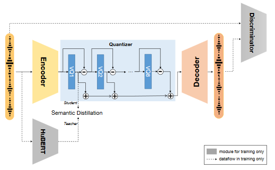

0. 摘要
专门设计的、结合两方面的新模型。新的评估测试集SLMTokBench benchmark。
1. 引言
LLM的卓越表现促进了语音语言模型的发展。在多种语音处理任务中都使用到了离散语音表示。如下图所示。

语义表征(semantic tokens)通常是自监督的预训练模型，训练目标是掩码语言建模，通过特定中间层对表征进行k-means聚类，表征是一维结构的序列。声学表征(acoustic tokens)通常是神经音频编解码器模型，训练目标是音频重构，通过RVQ(residual vector quantization)进行离散化，表征是由时间步长和量化器两个维度组成的矩阵。
基于这两种离散语音表征，语音语言模型的建模方法有三种：
- 语义表征+外部单元声码器。质量低、声学细节丢失。
- 以VALL-E这种zero-shot TTS为例的声学表征模型。声学表征中的信息太复杂导致的语音内容不准确。
- 级联语义表征模型和声学表征模型。级联模型的缺点，以及信息冗余重复、浪费。这三者的表现与作者的模型相比如下表所示。
| Accurate Content | High-quality Speech | Single Tokenizer | |
|---|---|---|---|
| Semantic LM | yes | no | yes |
| Acoustic LM | no | yes | yes |
| Hierarchical LM | yes | yes | no |
| USLM(thers) | no | yes | yes |
因此作者认为理想的语音表征应该保有两个关键特性：
- 与文本强对齐。
- 语音信息的有效保存(损失少)。
因此提出了Speech Language Model Token Benchmark测试集来评估语音表征是否适用于语音语言模型。评估表明语义表征高对齐、低信息，声学表征高信息、低对齐。作者的做法是基于声学表征模型，在RVQ结构中进行信息解耦，通过语义教师指导使得第一个RVQ quantizer生成包含文本信息的表征，后续的quantizer对信息进行补充。
实验结果表明，USLM在语音重建性能无影响的前提下，在语音处理任务上更强。
论文贡献为三点:
- SpeechTokenizer，基于Acoustic Tokens保有Semantic Tokens。
- SLMTokBench benchmark，适用于评估在语音语言模型上的表现。
- USLM，outperforms VALL-E on zero-shot TTS task。
2. 结论
依旧是三点贡献。
3. 测试集SLMTokBench
根据两个特性来评测模型效果。
4. SpeechTolenizer

基于LSTM->BiLSTM的EnCodec，HuBert作为语义教师指导残差量化过程。余弦相似度与伪标签，获得损失。训练任务是重构任务与语义蒸馏任务。在重构任务中和EnCodec一样使用了GAN网络